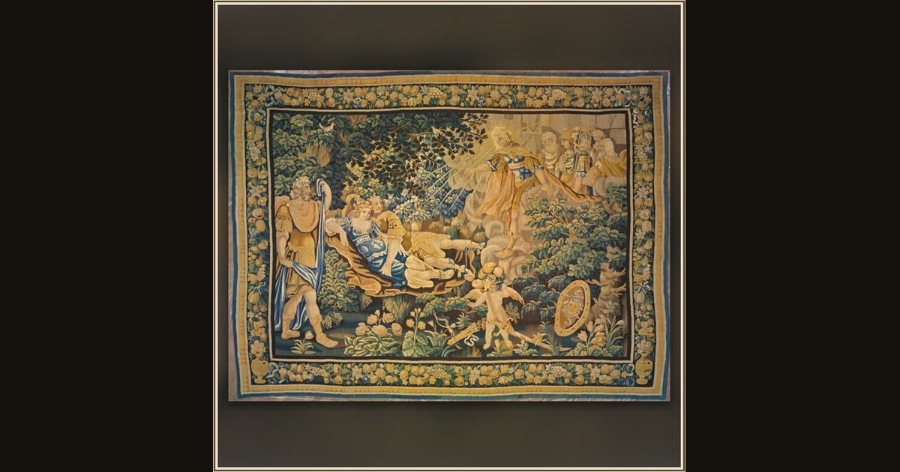

Apollo Exposing Mars and Venus to the Ridicule of the Olympians, from Ovid's Metamorphoses
France, possibly Aubusson · c. 1650 · The Art Institute of Chicago · Chicago, USA
Woven in wool and silk, this tapestry crowds all of Olympus around Ares and Aphrodite, caught fast in Hephaestus’ net. The “unquenchable laughter” of the gods is exactly how Demodocus ends his song in the hall of Alcinous. Explore its place in Book VIII of the